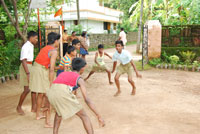

Sanjeevani Samithi's work is focused mainly in three sectors Charity , Education and Social work.
Charity Work
Our work on charity side is mainly concentrated on
Sanjeevani Balika Sadanam
 Balikasadanam was started at Urakam in the year 1993 in the 1 acre compound and the old ancestral house donated by Gopurathingal Smt.Parvathi Amma and her daughter Smt.Karthiayani Amma. Both of them suffering from old age ailments were staying in this house then. Initially,there were only six inmates. The activities slowly picked up momentum with the active participation and help of RSS workers and well wishers in and around Urakam. In the following 3 years RSS workers in Cherpu, Karuvannur and Irinjalakkuda got increasingly involved in Balikasadanam activities and with their help an awareness campaign was initiated in these areas.
Balikasadanam was started at Urakam in the year 1993 in the 1 acre compound and the old ancestral house donated by Gopurathingal Smt.Parvathi Amma and her daughter Smt.Karthiayani Amma. Both of them suffering from old age ailments were staying in this house then. Initially,there were only six inmates. The activities slowly picked up momentum with the active participation and help of RSS workers and well wishers in and around Urakam. In the following 3 years RSS workers in Cherpu, Karuvannur and Irinjalakkuda got increasingly involved in Balikasadanam activities and with their help an awareness campaign was initiated in these areas.
Swami Agamananda Balasadanam
 Palazhi Sree Ramakrishna Ashrama situated on the banks of Karuvannur river in a 3 ½ Acre Compound was established by Sri Sri Nirmalananda Swami Maharaj who was one of the direct disciples of Sree Ramakrishna Paramahamsa and founder of Sree Ramakrishna movements in Kerala. This Ashrama is blessed with the visit of Sri Agamananda Swami, also known as Kerala Vivekananda. However since Nirmalananda Swami decided to disassociate from the Belur Ramakrishna Mut and Nirmalananda swami had no proper lineage of disciples,gradually the Ashrama found it difficult to carry on the activities and resultantly, the control of the Ashrama came under late Shri.Krishna Warrier.
Educational Institutions
Educational institutions under Sanjeevani Samithi are
- CNN Higher Secondary School
- CNN Boys High School
- CNN Girls High School
- CNN Boys LP School
- CNN Girls LP School
- Sree Sankara Sisu Vidhya Mandiram
- C.N.N TTI
Social work
MangalyaNidhi Program
Apart from the ongoing activities, we have recently undertaken a special project to render financial help for the marriage of girls of parents living under very poor circumstances in the society. A special fund called “Mangalya Nidhi” has been created for the purpose. Donations from people intending to contribute this noble cause are solicited. So far, we have helped eight deserving girls.